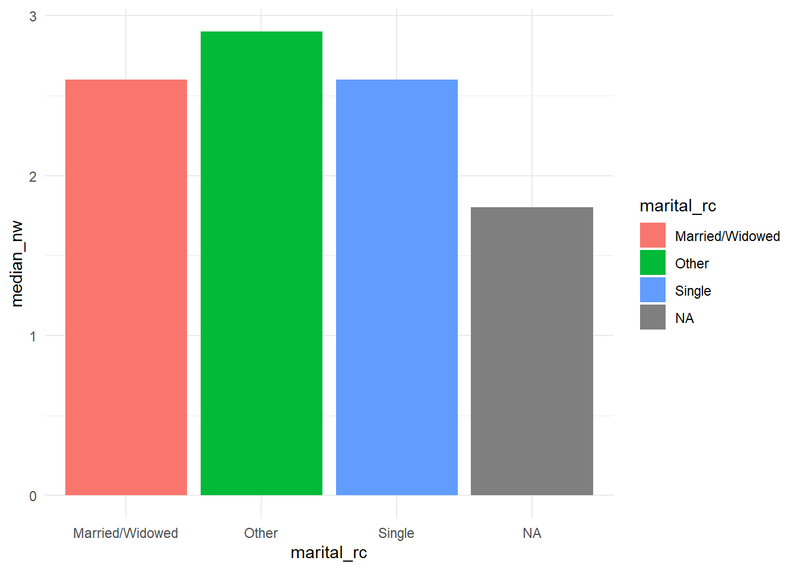

getwd()5 Workflows and Wrangling
At this point in the course, we have primarily been working with data from packages, which is generally convenient and straight forward. We install the package with the data we want, we load the package from our library, and then we access the data and begin summarizing it. The bad news is that the data we want for a particular project oftentimes isn’t contained in a package. The worse news is that we usually need to clean and transform the data in order to get it into a format that actually works for analysis.
This chapter covers some of the processes and functions in R made for dealing with these unfortunate eventualities. We’ll start with the general problem of working with files in R, then learn how to get data in, and then we’ll learn more about how to make data analyzable.
This chapter will not, of course, provide you with the all of the answers to the data wrangling problems you will eventually encounter. We will barely scratch the surface. But, once you manage to get data in, data wrangling becomes a matter of learning new functions and practicing the tidy data skills you’ve already started to learn.
5.1 What’s Happening Under the Hood?
Up until now, we’ve been writing our code in plain-text files saved with a .R file extension (or what we’ve been calling R Script files) and we haven’t needed to load data from other files or to save anything new.
But, this isn’t entirely true. We have actualy been loading data from files saved on our computers, it just so happens that our use of packages and the library() function have concealed and greatly simplified the back-end interactions leading to data showing up in our RStudio environments. This is why, if you were to disable the Wi-Fi on your computer, you would still be able to access data from the GSS.
As with any type of computer program, R operates within the file structure of your computer. It uses data, functions, and other compiled code which has been saved across a number of files (and file types) in different locations to run the program itself and to enable you to do things with the program. This is the case for everything from the apps on your smartphone to the operating system of your laptop. The reason we don’t usually see the underlying files or code is because software developers realize that most people would rather not be bothered by these sorts of technical details - or worse, they might mess something up. We don’t need to know how an engine works to drive a car, after all, and if we were to start tinkering around inside we might start breaking things.
For this chapter, we don’t need to go deep into the engine bay of R or RStudio. All we need to know is how to get R to interact with files saved in different locations on our computers and how to organize them in a way that makes them easy to access.
5.2 File Structures, File Paths, and the Working Directory
Your computer’s operating system (Windows, MacOS, or Linux) organizes the files on your computer into folders. You might have created some folders on your own, renamed some, or stored files like photos, documents, and other items across them. There are usually default folders for files of a particular type. Pictures might go in a “Pictures” folder, for example, and documents in a “Documents” folder. Within a “Documents” folder, you might have a folder for “Sciences Po” and another sub-folder for “SPSSUR.” The way files are organized across folders and sub-folders on a computer’s hard drive is often referred to as the file structure. Within a file structure, each file has what is called a file path, which is an address that tells you where the file is located. In Windows, they usually look something like this:
"C:\Users\wcs26\Documents\Sciences Po\SPSSUR\my_file.R"In MacOS, they might look more like this:
"/Users/wcs26/Documents/Sciences Po/SPSSUR/my_file.R"As an important aside, when you need to write file paths inside of R, it’s generally preferable to write file paths in the MacOS format you see above (i.e., using backwards slashes, /) even if you are using a PC. This is because the forwards slash, \, is a special character in R.
Within the operating systems themselves, file paths are slightly easier to find in Windows than in MacOS, since you can get most of the way the way there by clicking in the address bar at the top of a Windows Explorer window (see below).1 This gives the folder path, which when followed by another slash and the file name and extension, gives the file path. In MacOS, finding a file path more require a little more work (see here for instructions).2
When working with multiple files in R, as you often will, you will have to pay some attention to the file structure and file paths. If you are loading data from a file, for instance, R will need to know exactly where the data file is located. If you are saving a graph, on the other hand, R will need to know where you want to save it.
R makes an educated guess as to where the files you are working with (or will be working with) are located based on how you open R. This is called the working directory, which you can easily identify with the command below:
Sometimes the working directory isn’t quite what you think it should have been. You may sometimes (although we will avoid this) need to change the working directory. If so, you can always manually change it using setwd().
5.3 The Problem with File Paths
For any function that loads a file, you’ll have to provide a file path. If we need to load data then, we’ll need to use a file path for our data file. The problem is this though: if we have a file saved in a specific location on our computer and we use a file path inside our code to load it, how are other people going to use the same code when their file structure will probably look very different?
For example, let’s say I send you some code in an R Script as well as a data file called important_data.csv. I then have a line in my R Script file that looks like this:
read_csv("C:/Users/wcs26/Documents/Sciences Po/SPSSUR/important_data.csv")The command tries to read in a data file, important_data.csv, located at the address inside the function. So, R searches for C: and then Users and so on, until it hits a folder it can’t find. Chances are that will happen very quickly (since you and I have different file structures) and so then it will stop running and give an error.
This type of construction, where the file path lists every folder and sub-folder on the way to the destination, is called an absolute file path. If any part of the address is incorrect, the file will not be read. What then? Well, one solution is to use what are called relative file paths. A relative file path might look something more like this:
read_csv("important_data.csv")In this case, because we have not provided the full address, R assumes that the working directory is the rest of the missing file path (i.e., C:/Users/wcs26/Documents/Sciences Po/SPSSUR/). If it is correct and the file is located within your working directory, then it will work perfectly fine and the data will be read. If the file is not located in the working directory, however, it will fail. The trouble is that R can only keep one working directory at a time per session, so if you start working with multiple R scripts in different folders, it will (or rather, you will) get confused quickly and your relative references will also fail.
5.4 R Projects and here
Fortunately, there is a better way. To avoid confused working directories and the borderline criminal act of hard-coding absolute file paths in our scripts, we’re going to use two solutions that will help keep our file references straight.
5.4.1 R Projects
The first is R Projects. Creating an R Project helps to ensure that all of the files used in your data analysis project are kept together in a single folder and in a separate R session. When you open an R Project file (.Rproj), R Studio opens a fresh working session (i.e., any other scripts you are working in are kept in a separate R Studio window) and the working directory is correctly set to the location of the project. All of the files you need will be right where you need them.
Let’s create one for today’s classwork. In RStudio, go to File > New Project > New Directory > New Project. Then, type in a project name matching our course naming standards (e.g., “Stubenbord_Wesley_Session 5 Classwork”). Create the project as a sub-directory of your SPSSUR course folder (wherever this may be and whatever it may be called on your computer). Once this is done, this is where the R Project file will live.
You’ll find yourself in a new R Studio session with only a console window open. In you file structure, where you created your project, you will find a new folder which contains a .Rproj file along with a sub-folder with some settings stored for your project. This is your project folder and the .Rproj file is how you will open your project. Use this folder only for the files related to this project.
Back in R Studio, in the lower-right hand pane with the “Files” tab, you’ll see all of the files currently associated with the project (which should be zero apart from the .Rproj Project file itself).
In this same tab, you can add an R Script file to this project by clicking on “New Blank File” > “R Script”. Go ahead and save it with an appropriate name.

Running getwd() in your new script file or directly in the console will show you that your working directory does indeed match your R Project location. Huzzah.
5.4.2 here
The second tool is a package called here. here contains a very useful function, called here(), which will help ensure that our code is always oriented to the correct working directory: the location of the associated R Project file.
We’ll come back to the application of this function in a moment, but for now, install here, load it, and test the here() function.
#install.packages('here')
library(here)here() starts at C:/Users/wcs26/OneDrive/Documents/College/7_Ph.D/Sciences Po/Statistical Programming for the Social Sciences/SPSSUR Textbookhere()[1] "C:/Users/wcs26/OneDrive/Documents/College/7_Ph.D/Sciences Po/Statistical Programming for the Social Sciences/SPSSUR Textbook"5.4.3 Organizing Your Project
RProjects and here, while extremely useful, won’t spare you entirely from the task of having to organize your project folders. I recommend always creating a sub-folder within your project directory to store data sets (called data for example) and an additional sub-folder to store figure or graphs (called figures, for example). You might find other folders (like a a docs folder for documentation) useful depending on the project. You can create these folders directly within R Studio via the ‘Files’ tab in the lower-right hand pane.
5.5 Getting Data into R
Let us return to the primordial problem, though, which is getting data into R. In the social sciences, the data we use can come from a variety of sources: we might take our data from long-running surveys, such as the General Social Survey, the European Social Survey, or the World Values Survey. We can also use administrative data produced by government agencies, like the Federal Bureau of Investigation’s Uniform Crime Reports or data from New York City’s Open Data initiative. Or, we can use data from other sources, which might not have been produced with research or administrative purposes in mind. For example, we can scrape data from social media to see how public sentiment on a particular topic changes over time.
In any case, however, the most common format you are likely to see is a CSV, which stands for comma separated values. CSVs are particularly appealing for data storage, because they are lightweight and simple. All they consist of is data in rows (separated by new lines) and columns (separated by commas). A CSV file could consist of this, for example:
"id","name","age","country"
1011232,"Bill Gates",75,"United States"
1022234,"Warren Buffet",82,"United States"When you open a CSV file in software like Microsoft Excel, Excel automatically parses it, separating the values into different columns based on the position of the commas and into different rows based on the line breaks.3 CSVs can sometimes have their values separated by other delimiters. Apart from the comma, CSV files in Europe often separate their values with semi-colons instead.
5.6 Loading files from CSVs
Thankfully, loading CSV files is not especially difficult in R. R has a base function for loading CSVs, read.csv(), but there’s a better version called read_csv() from the readr package which we’ll use today. readr is another package located in the tidyverse which must also be loaded separately like the scales package in the previous chapter.4
On the course Moodle site, you’ll find a CSV titled billionaires_2020-2023.csv, which contains some data on the world’s billionaires. Download this file and then save it in the data sub-folder you created in your Session 5 Classwork project folder. Open the Session 5 Classwork project and a script file inside of it. Let’s load a few libraries first and then the data set.
library(tidyverse)── Attaching core tidyverse packages ──────────────────────── tidyverse 2.0.0 ──
✔ dplyr 1.1.4 ✔ readr 2.1.5
✔ forcats 1.0.0 ✔ stringr 1.5.1
✔ ggplot2 3.5.0 ✔ tibble 3.2.1
✔ lubridate 1.9.3 ✔ tidyr 1.3.1
✔ purrr 1.0.2
── Conflicts ────────────────────────────────────────── tidyverse_conflicts() ──
✖ dplyr::filter() masks stats::filter()
✖ dplyr::lag() masks stats::lag()
ℹ Use the conflicted package (<http://conflicted.r-lib.org/>) to force all conflicts to become errorslibrary(readr)
library(here)read_csv() requires a file path in order to read the file into our R session. Because the data set is located in a sub-folder and because we want to use a relative path (rather than an absolute path), we can use here().
Remember, here() provides the file path to your R Project folder. Any additional folder or file names used as arguments inside of the here() function (separated by commas) will be added to that path. If your R Project folder is located at C:\Users\Documents\My Projects, for example, here("data") will output C:\Users\Documents\My Projects\data.
Entering the following, for example, should return the file path of the data set if you’ve saved it in a sub-folder called “data” within your R Project folder.
here("data","billionaires_2020-2023.csv")[1] "C:/Users/wcs26/OneDrive/Documents/College/7_Ph.D/Sciences Po/Statistical Programming for the Social Sciences/SPSSUR Textbook/data/billionaires_2020-2023.csv"To read the actual data set into R, now all we need to do is put this here function inside of read_csv().
read_csv(file = here("data","billionaires_2020-2023.csv"))Rows: 2640 Columns: 13
── Column specification ────────────────────────────────────────────────────────
Delimiter: ","
chr (8): name, gender, country, countrycode, region, marital, residence_coun...
dbl (5): id, 2020, 2021, 2022, 2023
ℹ Use `spec()` to retrieve the full column specification for this data.
ℹ Specify the column types or set `show_col_types = FALSE` to quiet this message.# A tibble: 2,640 × 13
id name gender country countrycode region marital residence_country
<dbl> <chr> <chr> <chr> <chr> <chr> <chr> <chr>
1 1 A. Jayson … male United… USA North… Married United States
2 9 Abdulla Al… male United… ARE Middl… Married United Arab Emir…
3 10 Abdulla bi… male United… ARE Middl… <NA> United Arab Emir…
4 12 Abdulsamad… male Nigeria NGA Sub-S… Married Nigeria
5 13 Abhay Firo… male India IND South… Married India
6 14 Abhay Soi male India IND South… <NA> <NA>
7 16 Abigail Be… female United… USA North… <NA> <NA>
8 17 Abigail Jo… female United… USA North… Married United States
9 18 Abilio dos… male Brazil BRA Latin… Married Brazil
10 20 Acharya Ba… male India IND South… Single India
# ℹ 2,630 more rows
# ℹ 5 more variables: selfmade <chr>, `2020` <dbl>, `2021` <dbl>, `2022` <dbl>,
# `2023` <dbl>As you can see from the output above, read_csv() worked. If our data had used a semi-colon as a delimiter instead of a comma, we could have used read_csv2() instead. We can see that the data set has 2,640 rows and 13 columns. Let’s save this in an object in our environment.
billionaires <- read_csv(file = here("data","billionaires_2020-2023.csv"))Rows: 2640 Columns: 13
── Column specification ────────────────────────────────────────────────────────
Delimiter: ","
chr (8): name, gender, country, countrycode, region, marital, residence_coun...
dbl (5): id, 2020, 2021, 2022, 2023
ℹ Use `spec()` to retrieve the full column specification for this data.
ℹ Specify the column types or set `show_col_types = FALSE` to quiet this message.You’ll notice that read_csv() says a lot each time you run it. Don’t confuse the red text you see here with errors, however. It’s just trying to be helpful by giving you some information about the data you’re reading in. Notably, we can see that there are 8 character columns and 5 dbl columns. dbl stands for double and is a type of numeric value. We can, of course, use glimpse() to see the variables again along with a few of the first values.
glimpse(billionaires)Rows: 2,640
Columns: 13
$ id <dbl> 1, 9, 10, 12, 13, 14, 16, 17, 18, 20, 25, 26, 27, 29…
$ name <chr> "A. Jayson Adair", "Abdulla Al Futtaim", "Abdulla bi…
$ gender <chr> "male", "male", "male", "male", "male", "male", "fem…
$ country <chr> "United States", "United Arab Emirates", "United Ara…
$ countrycode <chr> "USA", "ARE", "ARE", "NGA", "IND", "IND", "USA", "US…
$ region <chr> "North America", "Middle East & North Africa", "Midd…
$ marital <chr> "Married", "Married", NA, "Married", "Married", NA, …
$ residence_country <chr> "United States", "United Arab Emirates", "United Ara…
$ selfmade <chr> "self-made", "self-made", "inherited", "self-made", …
$ `2020` <dbl> NA, 2.437, 4.293, 3.365, 1.740, NA, NA, 12.531, 2.66…
$ `2021` <dbl> 1.110, 2.441, 3.107, 5.437, 2.663, NA, NA, 23.189, 2…
$ `2022` <dbl> 1.140, 2.591, 2.695, 7.151, 2.902, NA, NA, 21.971, 2…
$ `2023` <dbl> 1.3, 2.4, 3.0, 8.2, 2.7, 1.2, 1.1, 21.6, 2.4, 3.4, 2…There are other ways you can take a look into your data. We can take a random slice of the data using slice_sample() from dplyr, for example. We can also use slice_head() to see the first few rows, slice_tail() to see the last few rows, or slice_min() and slice_max() to see the rows with the largest or smallest values for some variable. Give them each a try.
billionaires %>%
slice_sample(n = 5)# A tibble: 5 × 13
id name gender country countrycode region marital residence_country
<dbl> <chr> <chr> <chr> <chr> <chr> <chr> <chr>
1 3769 Sara Blakely female United… USA North… Married United States
2 18 Abilio dos … male Brazil BRA Latin… Married Brazil
3 1290 Fritz Draex… male Germany DEU Europ… <NA> Germany
4 4207 Tom Golisano male United… USA North… Married United States
5 3901 Shu Ping female Singap… SGP East … Married Singapore
# ℹ 5 more variables: selfmade <chr>, `2020` <dbl>, `2021` <dbl>, `2022` <dbl>,
# `2023` <dbl>No matter how we do it, our purpose at this stage should always be to get a sense for whether any potential issues are lurking beneath the surface.
You may have noticed from glimpse that there is something a little bit weird about this data. Four columns at the end have numbers as titles. What are these columns? They’re the estimated net worth of each of the listed individuals for each of the named years (i.e., 2020, 2021, 2022, 2023). The values are in billions of US dollars.5
We can use slice_max() to see who was the richest person in 2023, for example. Note, however, that when we reference a variable which begins with a number, we have to use the ` character to enclose the variable name. This is because R does not allow object names to start with a number.
billionaires %>%
slice_max(`2023`, n = 1)# A tibble: 1 × 13
id name gender country countrycode region marital residence_country
<dbl> <chr> <chr> <chr> <chr> <chr> <chr> <chr>
1 425 Bernard Arn… male France FRA Europ… Married France
# ℹ 5 more variables: selfmade <chr>, `2020` <dbl>, `2021` <dbl>, `2022` <dbl>,
# `2023` <dbl>Now we can see that Bernard Arnault was the richest person in 2023 with a recorded net worth of $211 billion. What if we want to see what the cumulative net worth of French billionaires was for these years? Maybe we could use dplyr to summarize:
billionaires %>%
group_by(country) %>%
filter(country == "France") %>%
summarize(total_nw = sum())# A tibble: 1 × 2
country total_nw
<chr> <int>
1 France 0Here we run into an issue. We can’t group_by(country, year), because there is no variable called year. There’s also no net_worth variable that we can put into our summarize() function. So, we’re stuck with bad options. We could try something like this:
billionaires %>%
group_by(country) %>%
filter(country == "France") %>%
summarize(nw_2023 = sum(`2023`),
nw_2022 = sum(`2022`),
nw_2021 = sum(`2021`),
nw_2020 = sum(`2020`))# A tibble: 1 × 5
country nw_2023 nw_2022 nw_2021 nw_2020
<chr> <dbl> <dbl> <dbl> <dbl>
1 France 585. NA NA NAThat got us the total net worth of French billionaires in 2023, at least, but it didn’t calculate anything for the other years. The reason why we’re having a hard time here is that our data is not in the right format for tidyverse functions.
5.7 Tidy Data
In the previous chapter, we learned that the gapminder data was in just the right format for ggplot. We called this a long format, which is the word usually used in the social sciences to describe it. In a long format, the rows are repeated observations for some unit of analysis across some dimension (like time). In the case of the gapminder data, we had countries, our unit of analysis, and repeated observations across years for a set of variables of interest (e.g., life expectancy and GDP per capita), as shown below.
| country | year | lifeExp | gdpPercap |
|---|---|---|---|
| France | 1952 | 67.41 | 7029.809 |
| France | 1957 | 68.93 | 8662.835 |
| France | 1962 | 70.51 | 10560.486 |
| France | 1967 | 71.55 | 12999.918 |
| France | 1972 | 72.38 | 16107.192 |
In the billionaires data, we instead have a variable of interest (net worth) split across several columns by some dimension (time).
| id | name | 2020 | 2021 | 2022 | 2023 |
|---|---|---|---|---|---|
| 1 | A. Jayson Adair | NA | 1.110 | 1.140 | 1.3 |
| 9 | Abdulla Al Futtaim | 2.437 | 2.441 | 2.591 | 2.4 |
| 10 | Abdulla bin Ahmad Al Ghurair | 4.293 | 3.107 | 2.695 | 3.0 |
The column titles are values (e.g., 2020, 2021), not actually variables. This is called wide data. Wide data has it’s uses. Mainly, it can be very convenient for storing a large amount of data in a small amount of space. If you’re looking to print a lot of data on paper, wide data is your format. Long data, on the other hand, is better for data analysis.
The tidyverse functions require data to be in what Hadley Wickham and collaborators call a tidy format. In tidy data, each variable is in a column, each observation is in a row, and each cell contains a single value (Wickham et al. 2019). It is, in other words, in a consistent long-format. If we want to be able to use all of the great features of dplyr and ggplot, then we need to transform our data into a tidy format.
5.8 Pivoting from Wide to Long
Fortunately, dplyr has some handy functions for this. Since we have data in a wide format and wish to go to a long format, we’ll need to use a function called pivot_longer(). There are three arguments we need to provide to pivot_longer().
First, in the cols = argument, we need to provide the columns we are trying to combine into a single variable. In our case, our net worth values are distributed across the `2020`, `2021`, `2022`, and `2023` columns, so we’ll put those in a vector and add them here. Next, in the names_to = argument, we need to identify where we want to put the names for each of those values (in other words, the titles for each of our former columns). Since each of those column names corresponds to a year, we’ll tell it to put them in a "year" column. Last, we need to specify a name for the variable holding all of the values that were stored across those columns. Since the values were net worth, we’ll call this new variable net_worth. We might also want to drop the rows which contain NA values for net worth, so we’ll add an optional fourth argument, values_drop_na =.
billionaires %>%
pivot_longer(cols = c(`2020`, `2021`, `2022`, `2023`),
names_to = "year",
values_to = "net_worth",
values_drop_na = TRUE)# A tibble: 9,142 × 11
id name gender country countrycode region marital residence_country
<dbl> <chr> <chr> <chr> <chr> <chr> <chr> <chr>
1 1 A. Jayson … male United… USA North… Married United States
2 1 A. Jayson … male United… USA North… Married United States
3 1 A. Jayson … male United… USA North… Married United States
4 9 Abdulla Al… male United… ARE Middl… Married United Arab Emir…
5 9 Abdulla Al… male United… ARE Middl… Married United Arab Emir…
6 9 Abdulla Al… male United… ARE Middl… Married United Arab Emir…
7 9 Abdulla Al… male United… ARE Middl… Married United Arab Emir…
8 10 Abdulla bi… male United… ARE Middl… <NA> United Arab Emir…
9 10 Abdulla bi… male United… ARE Middl… <NA> United Arab Emir…
10 10 Abdulla bi… male United… ARE Middl… <NA> United Arab Emir…
# ℹ 9,132 more rows
# ℹ 3 more variables: selfmade <chr>, year <chr>, net_worth <dbl>If you take a look at the data now, you can see that we’ve increased our number of rows substantially (to 9,142) and each net worth value is now in a separate row according to the corresponding year and individual. Now we can do much of the same type of data analysis and visualization that we’ve been doing over the past couple of chapters.
# A quick and dirty plot.
tidy_bil <- billionaires %>%
pivot_longer(cols = c(`2020`, `2021`, `2022`, `2023`),
names_to = "year",
values_to = "net_worth",
values_drop_na = TRUE)
tidy_bil %>%
group_by(country, year) %>%
filter(country == "France") %>%
summarize(agg_nw = sum(net_worth)) %>%
ggplot(mapping = aes(x = year, y = agg_nw, group = country)) +
geom_line(size=2) +
labs(title = "The Wealth of France's Billionaires",
x = "Year",
y = "Net Worth (USD in Billions)") +
theme_minimal()`summarise()` has grouped output by 'country'. You can override using the
`.groups` argument.Warning: Using `size` aesthetic for lines was deprecated in ggplot2 3.4.0.
ℹ Please use `linewidth` instead.5.9 Merging Data
Let’s say that we want to do some further analysis involving data outside of the data set we are currently using. Can we add it to our existing data set? The answer is yes.
On the course Moodle site, you’ll find another data set called age.xlsx. This is an Excel file. Fortunately, the readxl package (also contained in the tidverse and requiring separate loading) has just the function. Download the file from the Moodle page, add it to your project’s data folder, and use the command below:
library(readxl)
bil_age <- read_xlsx(path = here("data", "age.xlsx"), sheet = "Sheet1")
glimpse(bil_age)Rows: 2,724
Columns: 3
$ id <dbl> 1, 9, 12, 13, 14, 16, 17, 18, 20, 25, 26, 27, 29, 32, 33, 34, 36,…
$ year <dbl> 2023, 2023, 2023, 2023, 2023, 2023, 2023, 2023, 2023, 2023, 2023,…
$ age <dbl> 53, 83, 62, 78, 49, 42, 61, 86, 50, 40, 44, 81, 39, 54, 52, 39, 6…As we can see from the output, there isn’t much in here, just an ID, a year, and an age. If we want to use this data in our analysis, we now need to merge it with our previously tidied data. We might just want to check the year column to see how many years this data covers.
bil_age %>%
distinct(year)# A tibble: 2 × 1
year
<dbl>
1 2023
2 NA#An alternative way:
#unique(bil_age$year)There’s only one year and some missing values. Before we go ahead and merge, we should also check to make sure that there is only age value for each of the IDs. The code below will count the number of rows
bil_age %>%
count(id) %>%
filter(n > 1)# A tibble: 59 × 2
id n
<dbl> <int>
1 1 4
2 9 2
3 12 5
4 13 5
5 14 2
6 15 2
7 16 2
8 17 5
9 18 5
10 19 2
# ℹ 49 more rowsIt looks like there are a few duplicates in here. Let’s see if dropping the NAs fixes our problem. They won’t be useful in our analysis later.
bil_age %>%
drop_na(age) %>%
count(id) %>%
filter(n > 1)# A tibble: 0 × 2
# ℹ 2 variables: id <dbl>, n <int>Good, no results, which means that dropping the NAs solved our problem with duplicates. Let’s save the tibble without the NAs and carry on with our merge.
bil_age %>%
drop_na(age) -> bil_ageNote that we’ve use our assignment operator in a somewhat unorthodox way here. Instead of using it at the begining of the piped function, we’ve added it to the end. This works and is also acceptable.
Now, let’s merge. Here, we’ll use a function from dplyr called left_join(). There are other types of _join() functions depending on the use case. In our case, we have an existing data set and we simply want to add data to it. We don’t care much about what happens to any data in our age data that does not match. We’ll use left_join() as a result. Other types of joins include a right_join(), an inner_join(), a left_join() and a full_join(). Take a look at the supporting documentation to learn more about them.
left_join(x = tidy_bil,
y = bil_age,
join_by(id, year))This didn’t quite work and, if we look at our error, we can see why. The year column in our tidy_bil data is a character and the the year column in our age data is a double. We’ll have to convert the column in tidy_bil to continue. We should probably convert year to a date format, but I’m going to cheat here for now and just convert it to a numeric variable for convenience.
tidy_bil %>%
mutate(year = as.numeric(year)) -> tidy_bilLet’s try the merge again:
tidy_bil <- left_join(x = tidy_bil,
y = bil_age,
join_by(id, year))
# An alternative way to do this is:
#tidy_bil <- tidy_bil %>%
# left_join(bil_age,
# join_by(id, year))Success! Whenever you do these sorts of things, I recommend running the code without re-assigning it back to the original object first and then only re-assigning it after you are sure it works. Otherwise, you may start to get confused. If you take a look at tidy_bil, you can see that we now have an age column. Now we can do something like this:
p <- ggplot(data = tidy_bil,
mapping = aes(x = age,
y = net_worth))
p + geom_point() + theme_bw()Warning: Removed 6569 rows containing missing values or values outside the scale range
(`geom_point()`).# An alternative way to do this is:
#tidy_bil %>%
# ggplot(mapping = aes(x = age,
# y = net_worth)) +
# geom_point() + theme_bw()The use of ggplot() above differs from the method you learned last chapter. In this case, we first save our base ggplot() layer to an object (arbitrarily named p here) and then we add layers to the object in a separate line of code. You’ll commonly see this in references elsewhere. Either style of writing your ggplot() code is fine. I tend to prefer the piped form from last chapter, because it allows you to add in your filters and do any other data manipulations in the same command.
5.10 Recoding variables
There is one more thing we might want to learn here: recoding. Recoding is useful when the categories within a data set aren’t quite appropriate for the way we want to analyze them.
Let’s say we want to compare the net worth of billionaires in our data set by marital status. For this, we could actually use the wide data. Let’s imagine that we don’t have our wide data in the first place. Could we get our long data into a wide format? Yes, using pivot_wider():
tidy_bil %>%
pivot_wider(
names_from = year,
values_from = net_worth
)# A tibble: 5,040 × 14
id name gender country countrycode region marital residence_country
<dbl> <chr> <chr> <chr> <chr> <chr> <chr> <chr>
1 1 A. Jayson … male United… USA North… Married United States
2 1 A. Jayson … male United… USA North… Married United States
3 9 Abdulla Al… male United… ARE Middl… Married United Arab Emir…
4 9 Abdulla Al… male United… ARE Middl… Married United Arab Emir…
5 10 Abdulla bi… male United… ARE Middl… <NA> United Arab Emir…
6 12 Abdulsamad… male Nigeria NGA Sub-S… Married Nigeria
7 12 Abdulsamad… male Nigeria NGA Sub-S… Married Nigeria
8 13 Abhay Firo… male India IND South… Married India
9 13 Abhay Firo… male India IND South… Married India
10 14 Abhay Soi male India IND South… <NA> <NA>
# ℹ 5,030 more rows
# ℹ 6 more variables: selfmade <chr>, age <dbl>, `2021` <dbl>, `2022` <dbl>,
# `2023` <dbl>, `2020` <dbl>We’ll just use the original data anyways though. To see what values are actually in our marital variable, we’ll use this:
billionaires %>%
distinct(marital)# A tibble: 9 × 1
marital
<chr>
1 Married
2 <NA>
3 Single
4 Widowed
5 Separated
6 Divorced
7 Widowed, Remarried
8 In Relationship
9 Engaged There are 9 distinct categories. Nine is perhaps too many. What if we decide we want to use just three categories: “Married/Widowed”, “Single”, and “Other”.
To re-categorize our data according to the new groupings, we can use the case_match() function inside of a dplyr mutate() function. Essentially, we are modifying a column such that the values of the column take on the recoded values of our previous column. We could mutate the original variable directly (in this case, marital), but it’s generally best practice to put our recoded values inside of their own, new column. We’ll call it marital_rc to indicate that it has been recoded.
The first argument in case_match() is the column that needs to be recoded. The following arguments follow the format old_values ~ new_values. The values to be recoded go on the left-hand side and the values they will be recoded as go on the right. We separate the left and right-hand sides with a ~ and we use a comma to separate our next set of values to be recoded. Since we are re-coding multiple values, we’ll put them inside of vectors.
Remember, test this without re-assigning the result to your original object and then once you are sure it works, you can go ahead and do it.
billionaires %>%
mutate(
marital_rc = case_match(marital,
c('Married', 'Widowed, Remarried', 'Widowed') ~ 'Married/Widowed',
c('Single') ~ 'Single',
c('Engaged', 'In Relationship', 'Divorced', 'Separated') ~ 'Other')) -> billionairesDid it work correctly?
billionaires %>%
distinct(marital_rc)# A tibble: 4 × 1
marital_rc
<chr>
1 Married/Widowed
2 <NA>
3 Single
4 Other Yes, we’ve recoded successfully. There seem to be NAs in our data, but we don’t necessarily want to drop them. Let’s make a quick graph showing median net worth with our recoded marital status variable for 2023.
billionaires %>%
group_by(marital_rc) %>%
summarize(median_nw = median(`2023`)) %>%
ggplot(mapping = aes(x = marital_rc,
y = median_nw,
fill = marital_rc)) +
geom_col() + theme_minimal()
Note, of course, that we can’t make any claims about associations here. There are a lot of missing values (NA) and we don’t know whether they would be biased towards a particular category. Our Other category is also quite expansive and maybe not analytically appropriate. Last, but not least, we don’t know whether any of the visual differences we are seeing in median net worth across category are due to random chance or due to some relationship between the variables. We’ll return to this last point in the next chapter when we begin talking about inferential methods.
5.11 Exercises
For the remainder of class, keep playing around with this data set to practice the new functions you’ve learned and the dplyr functions you’ve learned in previous chapters.
Note that if you copy and paste a path from a Windows Explorer into
R, you’ll have to change the direction of the\to/or deal with the\issue in a different way (there are other ways, but hopefully you won’t need to copy and paste paths anyways).↩︎If you are using a Linux-based OS, you probably won’t need an explanation of file structures and file paths.↩︎
Parsing refers to how software reads the values.↩︎
As before, rather than load the entire
readrpackage vialibrary(), you can also use the::syntax, as inreadr::read_csv().↩︎This data comes from my own research. The net worth estimates are adjusted estimates derived from Forbes’ annual World’s Billionaires list. They are inflation-adjusted to 2023 USD.↩︎